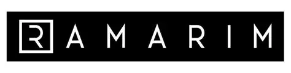
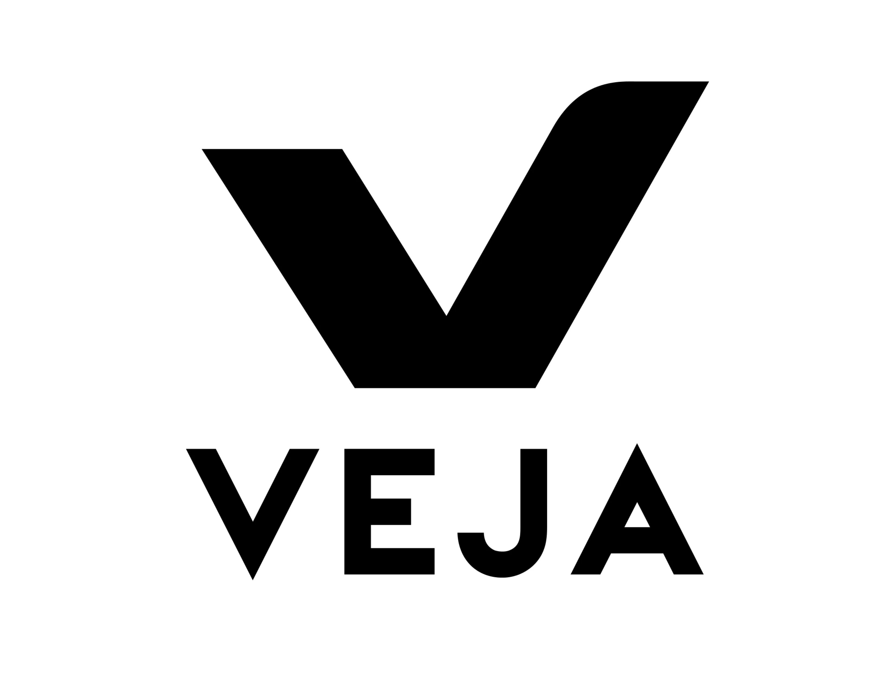
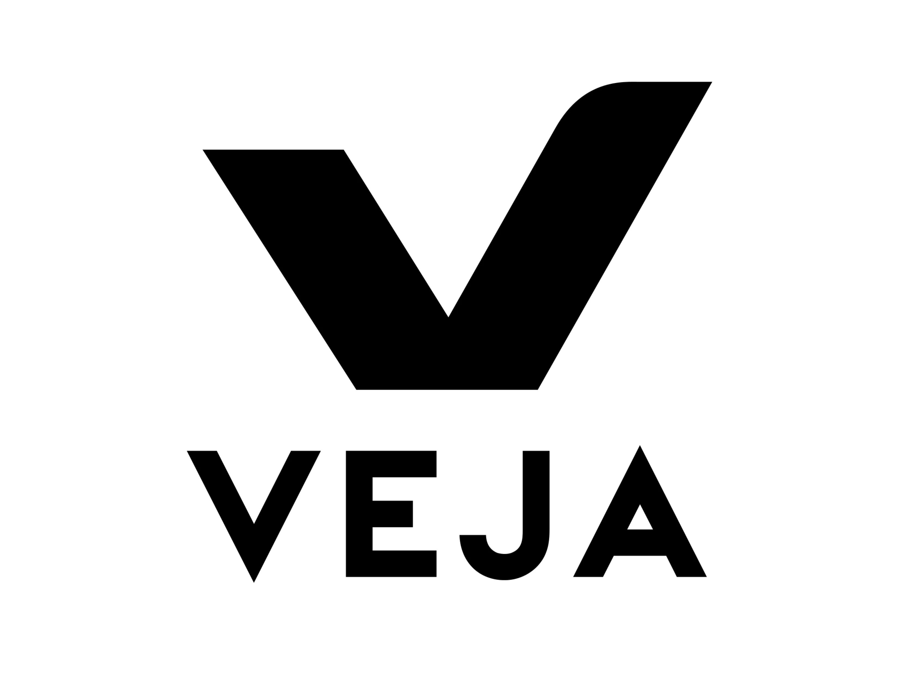
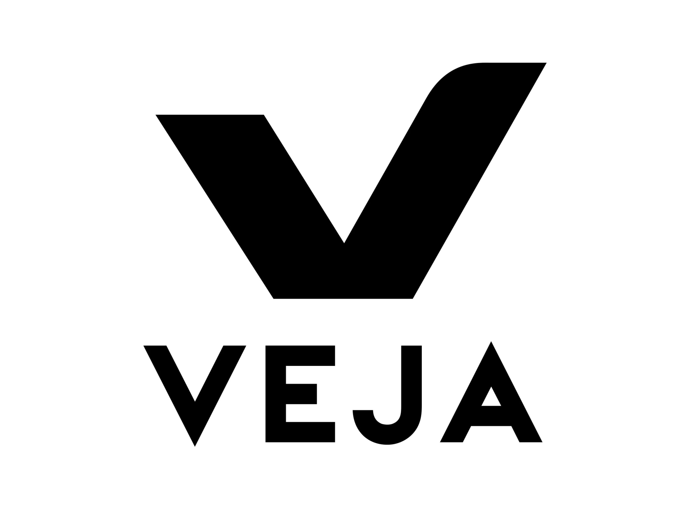

Nossas Estatísticas
Confira alguns números que mostram nossa trajetória e experiência no mercado fotográfico.
200+
Casamentos
Realizados com excelência e cuidado
500+
Eventos Corporativos
Para empresas de todos os portes
1200+
Ensaios Fotográficos
Pessoais, profissionais e artísticos
50+
Prêmios
Reconhecimento pela qualidade do nosso trabalho
100%
Clientes Satisfeitos
Nosso principal indicador de sucesso
10+
Anos de Experiência
Desde nossa fundação em 2013
Nossa Linha do Tempo
Alguns marcos importantes da nossa história:
2013
Fundada a FotoPro com um pequeno estúdio no centro da cidade
2015
Primeiro grande contrato corporativo com uma multinacional
2017
Expansão para um estúdio 3x maior e contratação de mais fotógrafos
2019
Primeiro prêmio nacional de fotografia de casamento
2021
Lançamento do serviço de fotografia aérea com drones
2023
Atendimento ao nosso 200º casamento e 500º evento corporativo
Alguns de Nossos Clientes
Empresas e pessoas que confiaram em nosso trabalho

 

